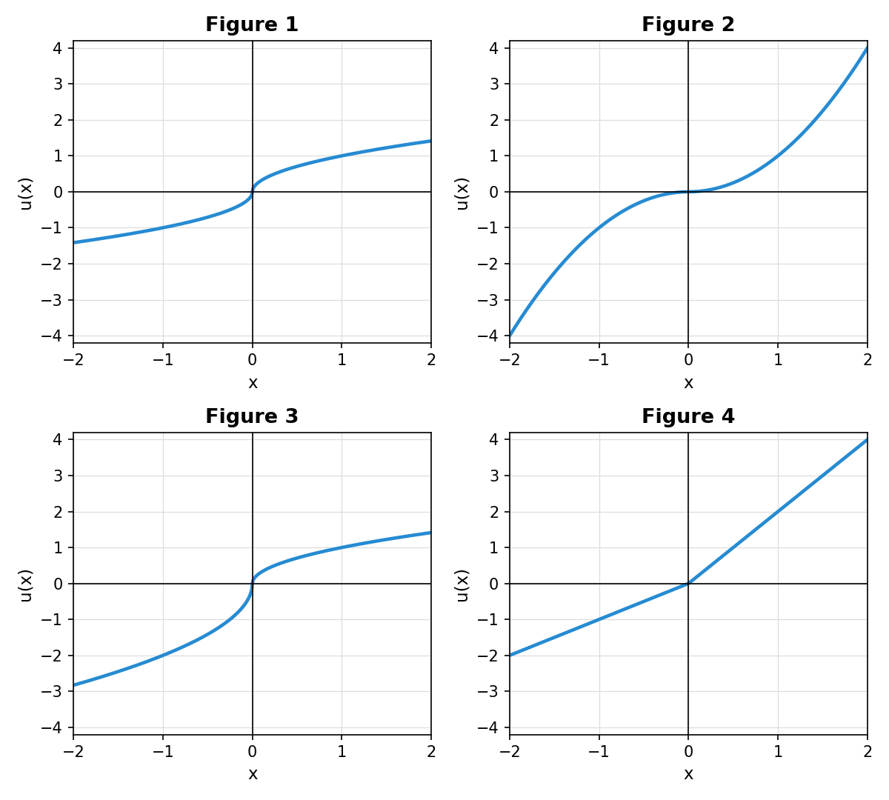

Not covered: in Behavioral Choice Under Risk, the frames from the Ellsberg urn onward (ambiguity and ambiguity aversion).
Consider three goods, X, Y, and Z. Baskets are written as $(X,Y,Z)$.
Week 1. A store sells basket $A=(2,3,1)$ for $9 and basket $B=(3,2,1)$ for $7. Maria buys basket $A$.
Week 2. The store charges $9 for basket $A$ and $10 for basket $B$, and it adds a third basket, $C=(1,1,4)$, also for $10. Maria buys basket $B$.
Mark all correct statements.
Answer. Recall the definitions: the chosen basket is directly revealed preferred to any basket that cost no more, and strictly directly revealed preferred to any basket that cost strictly less.
Notice that $C$, which Maria never bought, plays no role here. It is the subject of the next question.
Return to Maria in the previous question. Basket $C$ was never bought, yet once it was added to the menu Maria switched from $A$ to $B$. Which effect best explains her week 2 choice?
Answer. Menu effect.
The figures below show four utility (value) functions, where $x$ is a gain ($x\gt 0$) or a loss ($x\lt 0$) relative to the reference point.

Match each figure with the statement that describes it. Each figure has exactly one best match; each statement is used at most once.
Answer.
| Figure | Statement |
|---|---|
| Figure 1 | Risk averse in gains, risk loving in losses |
| Figure 2 | Risk loving in gains, risk averse in losses |
| Figure 3 | The utility/value function displays loss aversion |
| Figure 4 | Risk loving for gambles involving gains and losses |
There are two ways to find these matches. Both are correct; use whichever you find easier.
Way 1: marginal utility. Marginal utility is the slope of $u$. Decreasing marginal utility ($u$ concave) means risk averse, increasing marginal utility ($u$ convex) means risk loving, and constant marginal utility (a straight line) means risk neutral; see Attitudes Towards Risk.
Way 2: expected utility versus the utility of the expected value. Take three lotteries, each paying its two outcomes with probability $\tfrac12$:
Compare
$$U(X)=\tfrac12\,u(x_1)+\tfrac12\,u(x_2)\quad\text{with}\quad u(\mathrm{E}[X]).$$If $U(X)\lt u(\mathrm{E}[X])$, the individual is risk averse; if $U(X)\gt u(\mathrm{E}[X])$, risk loving; if they are equal, risk neutral. Geometrically, $U(X)$ is the midpoint of the chord joining the two outcomes on the curve, and $u(\mathrm{E}[X])$ is the height of the curve at $\mathrm{E}[X]$, as in the Risk Aversion frame. Chord below the curve: risk averse. Chord above the curve: risk loving.
Each table entry reads $U(X)$ versus $u(\mathrm{E}[X])$:
| $(-2,0)$ | $(0,2)$ | $(-1,1)$ | |
|---|---|---|---|
| Figure 1 | $\tfrac12 u(-2)\gt -1$ loving | $\tfrac12 u(2)\lt 1$ averse | $0=0$ neutral |
| Figure 2 | $-2\lt -1$ averse | $2\gt 1$ loving | $0=0$ neutral |
| Figure 3 | $\tfrac12 u(-2)\gt -2$ loving | $\tfrac12 u(2)\lt 1$ averse | $-\tfrac12\lt 0$ averse |
| Figure 4 | $-1=-1$ neutral | $2=2$ neutral | $\tfrac12\gt 0$ loving |
In Figures 1 and 3, $u(\pm 2)$ falls between gridlines, but we do not need its value. We only need to see that $u(2)$ is below 2 (Figures 1 and 3), that $u(-2)$ is above $-2$ (Figure 1), and that $u(-2)$ is above $-4$ (Figure 3).
Figures 1 and 3 are both risk averse in gains and risk loving in losses, so Figure 1’s statement fits Figure 3 too. Only Figure 3 displays loss aversion, though, and each statement is used at most once. So Figure 3 takes loss aversion, and Figure 1 keeps its statement.
The three unused statements.
According to Sapolsky (Behave, “The Amygdala”), if you asked amygdala experts what behavior their favorite brain structure brings to mind, what would top their list? Mark all that apply.
Answer. Fear and anxiety.
The answer is in the quote from the notes: “if you asked amygdala experts what behavior their favorite brain structure brings to mind, ‘aggression’ wouldn’t top their list. It would be fear and anxiety.”
In the experiment where a monkey presses a lever to obtain a raisin, in which phase do we see the highest release of dopamine?
Answer. When the light comes on, signaling the start of a reward trial.
From the notes: “lots of dopamine is released when the light first comes on, signaling the start of the reward trial, before the monkey starts lever pressing.”
Briefly explain your answer in Q5.
Answer. Dopamine is about the anticipation of a reward, not the reward itself.
The dopamine system codes for discrepancy from expectation. For a well-trained monkey, the raisin is no surprise, so it brings only a small increase in dopamine. The news is the light: it is the first sign that a reward is on its way, and that is when dopamine is released.
Why would evolution favor anticipation? Dopamine fuels the pursuit of a reward. It sends the monkey to the lever, as it kept the fox jumping for the grapes. An animal that felt nothing until the food was in its mouth would have little reason to work for it.
Consider the following rule of thumb for making a choice:
“Pick your top three choices. Among them, find the two that are easiest to compare. Choose the better of those two, ignoring the third.”
Fill in the blanks: This rule of thumb is a ______ that explains the ______ effect.
Answer. This rule of thumb is a heuristic that explains the decoy effect.
A rule of thumb, a quick but imperfect mental shortcut, is what the notes call a heuristic. A bias is something else: the systematic error a heuristic can lead to.
Why the decoy effect? A decoy is easy to compare with the option that beats it. In the Economist example, the print subscription and the print + web subscription both cost $125, so they are by far the easiest pair to compare. The rule picks the better of the two, print + web, and ignores the web subscription. That is exactly the pull of the decoy. Every decoy effect is a menu effect, but this rule explains the decoy effect specifically, because it needs an option that is easy to compare with another.